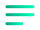

<aside class="sidebar" [class.full]="sidebarOpen">
    <button class="toggle" (click)="toggleSidebar()">
        
    </button>
    <ul class="sb_menu">
        <li *ngFor="let item of sidebarMenu" class="sbm_item" [class.active]="item.active"
            (click)="toggleActive(item.id)" [attr.data-label]="item.label">
            
            <span>{{item.label}}</span>
        </li>
    </ul>
</aside>